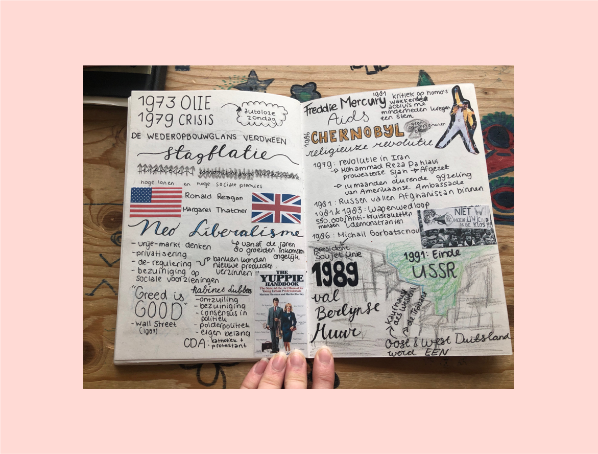
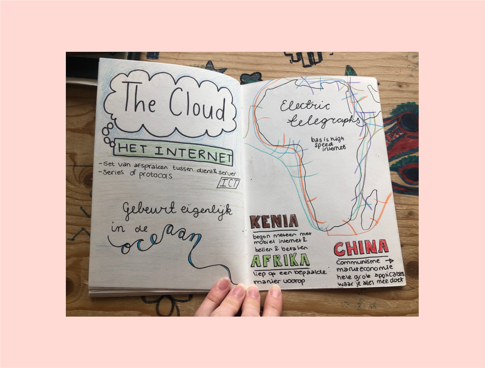

Situatie
Dit is een opdracht voor het vak genaamd Ontwerpgeschiedenis. De opdracht was eigenlijk om op een visuele manier door middel van sketchnotes een verhaal te vertellen over de geschiedenis van de kunst en het ontwerpen.
Dit was dus niet zo zeer een echte ontwerpopdracht voor een opdrachgever, maar meer een ontwerpopdracht voor jezelf, waar ik veel van heb geleerd en ook veel plezier aan heb gehad.
Taak
De bedoeling was dus om een A5 notitieboekje te vullen met sketchnotes over de vier hoorcolleges die allemaal onderwerpen uit de ontwerpgeschiedenis hebben besproken.
Ik heb met mijn docent af en toe gepraat, of beter gezegd, gediscusieerd over onderwerpen uit de hoorcolleges, omdat ik het erg interessant vond om er over door te praten. Zo heb ik met veel interessante inzichten dit boekje kunnen vullen.
Activiteit
Ik heb eerst alle notities gemaakt in een gewoon boekje, omdat ik niet meteen wilde beginnen met het boekje waar het einderesultaat in zou zitten. Daarrna heb ik met potlood alles erin geschetst en gezet.
Vervolgens ben ik met pen, gekleurde potloden, stiften en uitgeprinte fotos/plaatjes er in verder gegaan om alles in te vullen. Dat heeft geleid tot dit boekje.
Resultaat
Ik ben erg tevreden over mijn boekje, mijn docent ook, die vond het boekje ook erg mooi en heeft het dus erg goed beoordeeld.
Ik denk dat dit een leuke creatieve output voor mij was tijdens de bezigheid met alle andere vakken die ik had, en zou dit graag in mijn vrije tijd nog wel vaker willen doen.
Reflectie
Ik denk dat dit een goed voorbeeld is van mijn creativiteit omdat ik die compleet de vrije loop heb kunnen laten gaan. Ik vind dat erg leuk om die vrijheid af en toe te krijgen. Ik denk dat ik daarnaast ook hiermee het perfectionisme dat ik soms heb beter heb leren kennen, omdat ik natuurlijk niet alles perfect kon doen en fouten heb gemaakt, maar juist die fouten maakte het eindresultaat zo leuk.
Bekijk het hele boekje in dit PDF Bestand